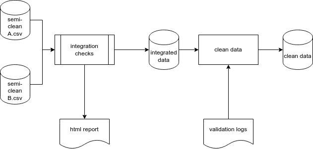

Integrating Different Datasets
integration.RmdIntegrating Data Sets
Once an individual data set has passed through the cleaning and validation process, it may need to be combined (or joined) with other data sets. This process is handled by the {targets} pipeline during the integration steps. There are two phases, the first is performing checks the second is the join operation.
The checks perform tests to ensure that the records in both data sets are compatible and match the expectations of the relationship between the two data sets. Secondly, the integration of the data sets is performed by using an SQL join operation. This is typically either a right-join, a left-join, an inner-join or a full-join.
The type of join operation selected depends on the relationship between the data sets. The critical information here are the primary-key (unique identifier) of the base table and the foreign-key of the table to be joined which is the attribute that should match the primary-key. In addition, the cardinality of the relationship is important to understand the expected result when joining the data. Below is an example of an entity relationship diagram that shows the relationship between two example data sets. Crow’s feet notation is used to illustrate that there is an optional 1:Many relationship with the left table and the right table. There is also a mandatory 1:1 relationship with the right table and the left table.

Also below is the relevant target that performs the joining operation and integrates these data sets together.
tar_target(integrated_mosq_field,
left_join(
x = fs_mosquito_field_semiclean,
y = longitudinal_identification_semiclean,
by = c("Batch_ID" = "batch_id")
)
)It is critical that data validation steps are correctly performed to ensure the integration of multiple data sets is successful. In the case where there are missing, malformed or duplicate primary key, the expectations around the relationship type will not hold up.
An overview of this integration process is below.

Types of Data
Throughout the data cleaning pipeline, we take in raw data and convert it to some form of clean data. There are several intermediate steps in this process. A standard terminology has been adopted to describe the steps in this process.
- raw data: is data that is read in directly from the source systems.
-
combined data: If the raw data is situated in
multiple files or data frames, a compatible and united data set of these
data are termed ‘combined.’
- semi-clean: Data are semi-clean once they have been corrected using the values provided in the validation log.
- integrated: Data are integrated when they are joined to other data sets.
- clean: Data are termed clean when they are integrated, and records that are still pending validation in the logs are removed, thereby leaving only a clean subset of validated data.
Tips for data management
Over the course of a long data collection exercise, standards and formats can diverge. This makes the data cleaning steps difficult and will slow down the ability to integrate data as above. Some general strategies can help to mitigate these risks:
- Ensure that data formatting to a standard where each row uniquely identifies a record and have a unique identifier without duplicates or missing values.
- Ensure all data are stored as a data.frame or tibble.
- In R, ensure that each column has a correct and unique column type.
(i.e. character, numeric and not list)
- Each column name should be unique and formatted consistently to
avoid spaces and special characters in column names. Hint: Use
janitor::clean_names(). - Design and enforce a Primary Key or Unique Identifier for each data set that will be meaningful and immutable.
- Think about storing data in a ‘tidy’ format where possible. See
here: https://www.jstatsoft.org/article/view/v059i10
- Store raw data in a machine readable format (i.e. CSV)
- Set some metadata standards at the start of the project around columns and data types. It is understandable that these might change over time, but having these standards will help plan how to best accommodate changes without breaking existing work.